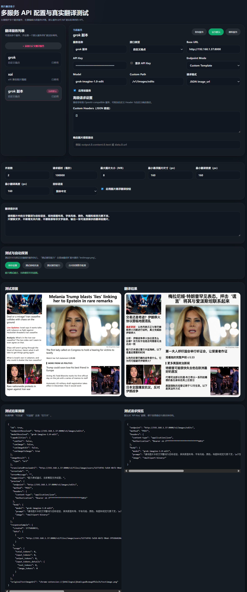

核心功能
- 网页图片悬浮翻译按钮
- 原位替换结果图与对比预览
- 支持 OpenAI、Gemini、xAI 兼容与自定义端点
- 设置页连通性测试、能力测试、自动探测
- 任务侧边栏、结果缓存、排除网站与图片
LLM IMAGE TRANSLATOR
一个面向 Chrome / Edge 的浏览器扩展：在网页图片上悬浮触发翻译，调用用户自行配置的模型图像服务，原位展示翻译后的结果图。
扩展不会默认把数据发送到开发者服务器。用户触发翻译后，请求会直接发往用户在设置页中配置的模型服务端点。
下图展示了多服务配置、真实翻译测试、自动探测与结果预览界面。
